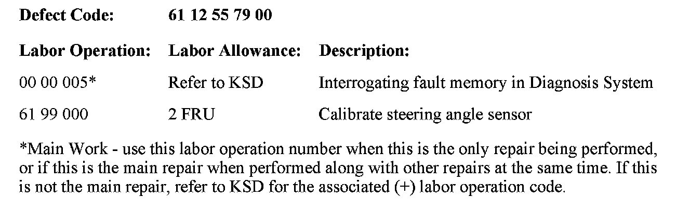
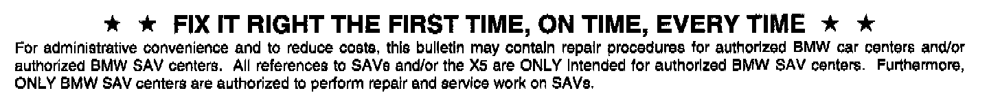

Restraints - Air Bag Lamp ON/Codes A1/6E3E Set
SI B 65 16 08Audio, Navigation, Monitors, Alarms, SRS
September 2008
Technical Service
SUBJECT
Airbag Warning Lamp Illuminated, FC A1
MODEL
E83 (X3) produced from September 2006
SITUATION
The airbag warning lamp is illuminated and fault code A1 (Message from DSC not received) is stored. In addition, the DSC warning is illuminated and fault code 6E3E (Steering angle sensor calibration required) is stored.
CAUSE
A low voltage condition caused the steering angle sensor position data to be lost. The battery may have been discharged or disconnected.
CORRECTION
Do not replace parts. If a vehicle fault caused the low battery condition, diagnose and correct the root cause.
Reinitialize the steering angle sensor using the BMW diagnosis tester. Refer to Repair Instruction RA 61 31 996 (Carrying out steering angle sensor adjustment). After initialization, delete all fault codes.

WARRANTY INFORMATION
Covered under the terms of the BMW New Vehicle Limited Warranty.

Disclaimer